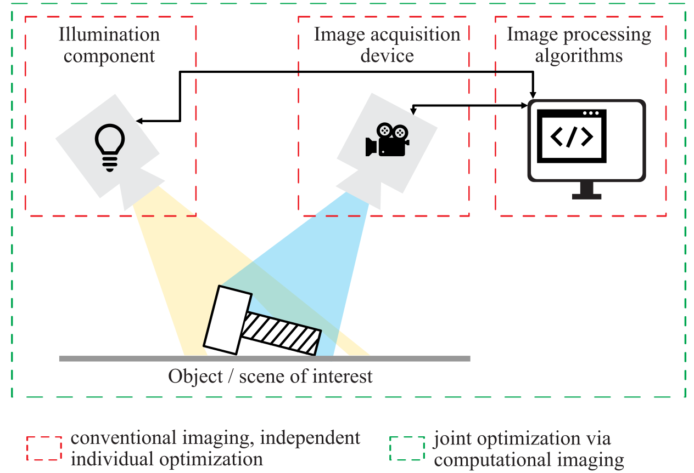
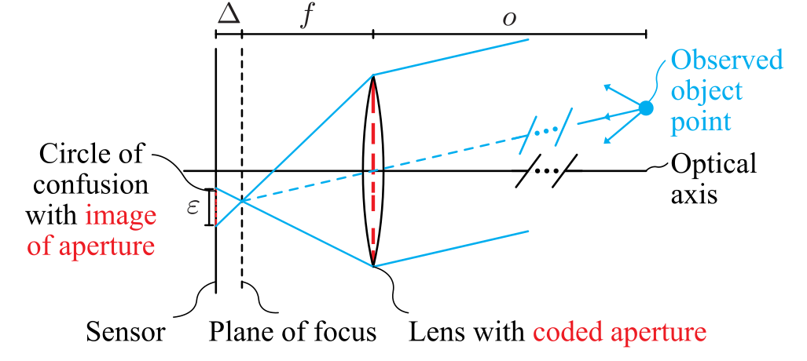
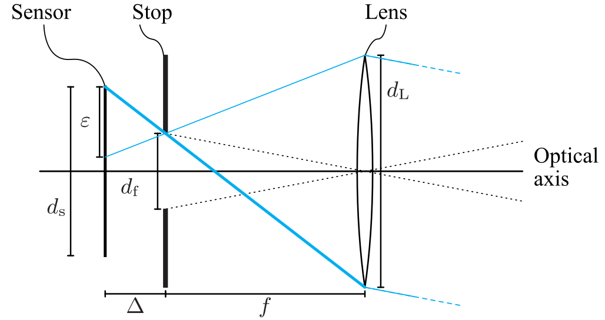
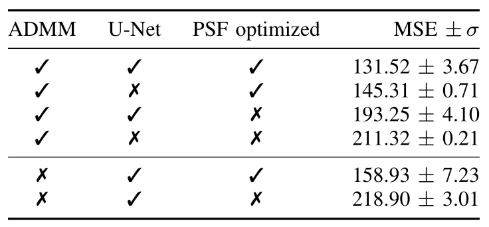
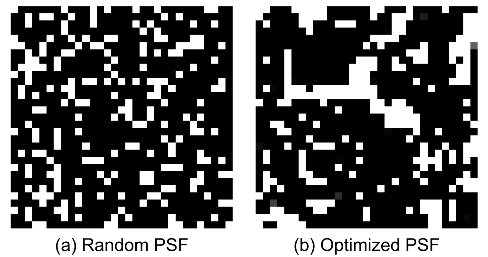
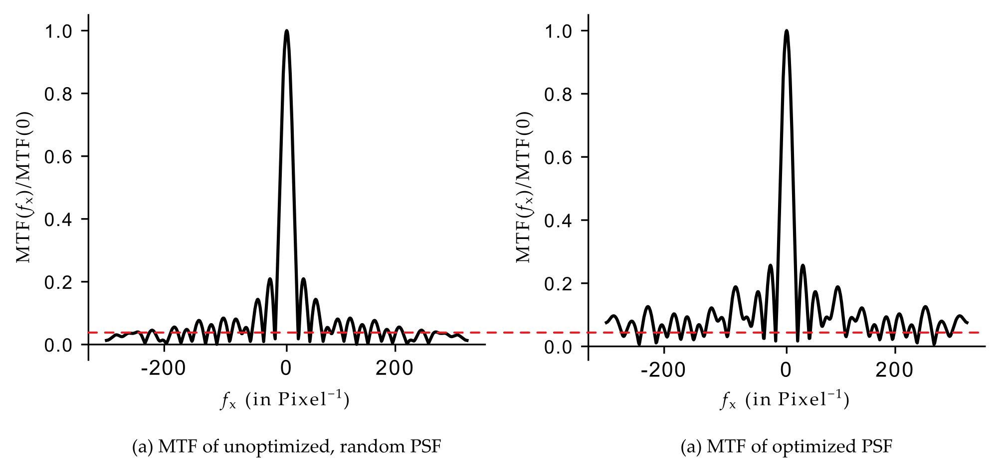
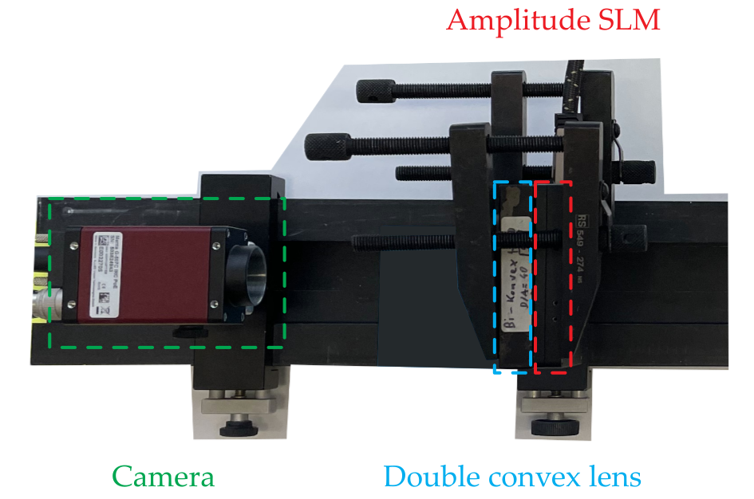
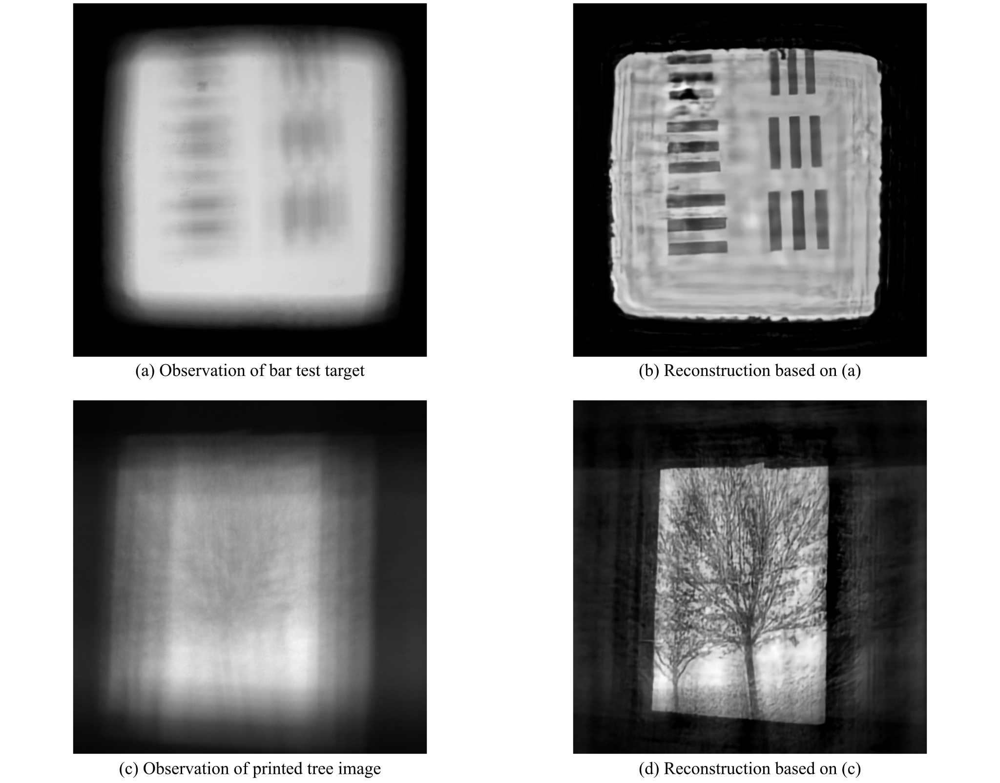

\(\begin{align} \newcommand{transp}{^\intercal} \newcommand{F}{\mathcal{F}} \newcommand{Fi}{\mathcal{F}^{-1}} \newcommand{inv}{^{-1}} \newcommand{stochvec}[1]{\mathbf{\tilde{#1}}} \newcommand{argmax}[1]{\underset{#1}{\mathrm{arg\, max}}\,} \newcommand{argmin}[1]{\underset{#1}{\mathrm{arg\, min}}\,} \end{align}\)
Computational Imaging
End-to-End Optimization#
Content#
Motivation & principle idea
Laser protection by defocus on purpose
Learned optimal patterns for deflectometric surface inspection
Motivation#
Think again about the definition of computational imaging systems we gave in the first chapter.

We elaborated, that the joint optimization of all major components (illumination, image acquisition and image processing algorithms) of an artificial vision system should lead to increased performance or other advantages compared to the classical approach of separately optimizing all those components.
Principle idea#
To be able to jointly optimize all those components, they have to be modeled in a common (mathematical) framework that also allows for modern optimization methods like gradient descent.
Laser protection by defocus on purpose#
The following figure shows the optical setup of the defocused imaging in detail:

Image formation model#
\(\begin{align} \mathbf{g} = \mathbf{Hs+n} \,, \end{align}\)
with observation \(\mathbf{g}\), matrix \(\mathbf{H}\) implementing the convolution, the sought latent image \(\mathbf{s}\) and the noise \(\mathbf{n}\).
Image reconstruction via ADMM#
Maximum a-posteriori approach
\(\begin{align} \hat{\mathbf{s}} = \argmin{ \mathbf{s}} \Vert \mathbf{Hs-g} \Vert^2_2 + \tau \Psi (\mathbf{s}) + \mathrm{pos}(\mathbf{s}) \,, \end{align}\)
with balanced regularization \(\tau \Psi( \mathbf{s})\) and enforced positivity \(\mathrm{pos}(\mathbf{s})\).
Introduction of slack variables
\(\begin{align} \hat{\mathbf{s} }, \hat{\mathbf{u} }, \hat{\mathbf{w} } &= \argmin{\mathbf{s}, \mathbf{u}, \mathbf{w} } \, \frac{1}{2} \Vert \mathbf{Hs-g} \Vert^2_2 + \tau \Psi( \mathbf{u} ) + \mathrm{pos}( \mathbf{w}) \\ & \mathrm{s.t.}\quad \mathbf{s-u = 0}, \quad \mathbf{s-w = 0} \,, \end{align}\)
with slack variables \(\mathbf{u,w}\).
Transformation into augmented Lagrangian in scaled form
\(\begin{align} L_{\tau, \alpha, \beta}&( \mathbf{s,u,w, \tilde{u}, \tilde{w}}) = \frac{1}{2} \Vert \mathbf{Hs-g} \Vert^2_2 \\ &+ \tau \Psi(\mathbf{u}) + \frac{\alpha}{2} \Vert \mathbf{s-u+\tilde{u}} \Vert^2_2 + \frac{\alpha}{2} \Vert \mathbf{\tilde{u}} \Vert^2_2 \\ &+ \mathrm{pos}( \mathbf{w}) + \frac{\beta}{2}\Vert \mathbf{s-w+\tilde{w}} \Vert^2_2 + \frac{\beta}{2} \Vert \mathbf{\tilde{w}} \Vert^2_2 \,, \end{align}\) with the dual variables \(\mathbf{\tilde{u}, \tilde{w}} \) of \(\mathbf{u}, \mathbf{w} \) and the corresponding weights \(\alpha, \beta\).
Anisotropic total variation regularization
\(\begin{align} \Psi( \mathbf{s}) = \Vert \mathbf{Ds} \Vert_1 \,, \end{align}\) with finite difference operator \( \mathbf{D} = \left[\mathbf{D}\transp_x \mathbf{D}\transp_y \right]\transp \in \mathbb{R}^{2N \times N}\).
Update rules
\(\begin{align} \mathbf{s}_{i+1} \leftarrow &\left( \mathbf{H}\transp \mathbf{H} + \alpha \mathbf{D}\transp \mathbf{D} + \beta \mathbf{I} \right)^{-1} \\ &\cdot \left( \mathbf{H}\transp \mathbf{g} - \alpha \mathbf{D}\transp (\mathbf{\tilde{u}}_{i} - \mathbf{u}_i ) - \beta ( \mathbf{\tilde{w}}_i - \mathbf{w} ) \right) \,, \\ \mathbf{u}_{i+1} \leftarrow &\,\mathcal{S}_{\tau / \alpha}( \mathbf{Ds}_{i+1} + \mathbf{\tilde{u}}_i ) \,, \\ \mathbf{w}_{i+1} \leftarrow &\mathrm{max}( \mathbf{0}, \mathbf{s}_{i+1} + \mathbf{\tilde{w}}_i ) \,, \\ \mathbf{\tilde{u}}_{i+1} \leftarrow & \mathbf{\tilde{u}}_i + \mathbf{Ds}_{i+1} - \mathbf{u}_{i+1} \,, \\ \mathbf{\tilde{w}}_{i+1} \leftarrow & \mathbf{\tilde{w}}_i + \mathbf{s}_{i+1} - \mathbf{w}_{i+1} \,, \end{align}\) with \(i\in \mathbb{N}\) indexing the iterations, \( \mathbf{I}\) denoting the identity matrix and the element-wise soft thresholding operator \(\mathcal{S}_{\tau / \alpha}\).
Problem: cyclic convolution assumption
Deconvolution step in Fourier domain \(\rightarrow\) cyclic convolution implicitly assumed.
⚡
Physical / optical convolution due to defocus is of course not cyclic!
❓ Question
Assume that you only have access to a spatial convolution operator that does not support the “wrap around” border handling. How could you still make sure that the result is equal to a cyclic convolution?
Optical zero padding#

with sensor size \(d_\mathrm{s}\), defocus distance \(\Delta\), stop diameter \(d_\mathrm{f}\), focal length \(f\) and lens diameter \(d_\mathrm{L}\).
The diameter \(d_\mathrm{f}\) of the required step is given by
\(\begin{align} d_ \mathrm{f} = 2 \left( \frac{\frac{d_ \mathrm{L} + d_ \mathrm{s}}{2}}{f + \Delta} \cdot f - \frac{d_ \mathrm{L}}{2} \right) \,. \end{align}\)
Optimization pipeline#
Optimization of the PSF#
Constraint for light efficiency:
❓ Question
Do you have an idea how a loss function for the PSF could look like that is minimized when a certain user-definable fraction \(p\) of light is transmitted by the amplitude mask?
\(\begin{align} \ell_{\mathrm{PSF} } (h) = \left( \frac{\sum_{\mathbf{x} \in \Omega} h(\mathbf{x} )}{\vert \Omega \vert} - p \right)^2 \,, \end{align}\)
with the discrete spatial support \(\Omega\) of the PSF and the sought light efficiency ratio \(p\in \left(0,\ldots, 1 \right)\).
This loss term reaches its minimum when the mean of the coefficients of the PSF approaches \(p\), i.e., when a ratio \(p\) of the incident light is transmitted.
Binary coefficients
❓ Question
What could be done to force the values of the PSF to be close to either \(0\) or \(1\)? Think about a function you got to know that processes its input in that manner …
Optimize intermediate variable \(\tilde{h}\) instead of \(h\) directly.
Feed \(\tilde{h}\) into steep sigmoid function:
\(\begin{align}\label{eq:psf_update} h(\mathbf{x} ) \leftarrow \frac{1}{1+\exp(-\gamma \tilde{h}( \mathbf{x} ))} \,, \end{align}\)
with a scaling factor \(\gamma\) of, e.g., \(\gamma = 20\).
Then \(h\) will be approximately binarized.
Results on simulated data#
Number of ADMM iterations

Simulated reconstruction results

Ablation studies


Influence of the PSF optimization

❓ Question
How could we get a more system-theoretical insight about what those PSFs are capable of?

MTF of unoptimized, random PSF |
MTF of optimized PSF |
|---|---|
|
|


Results on real data#


Achieved robustness#
About 1,600 times more robust, i.e., a potential increase of laser power of 350 W.
Learned optimal patterns for deflectometric surface inspection#
Classical deflectometry
⚡ Screen patterns are not optimized but chosen heuristically!
💡 Idea: Optimize pattern in end-2-end manner via learning.
Create synthetic test object with random defects
Optimize pattern via differentiable inverse rendering
Optimization result